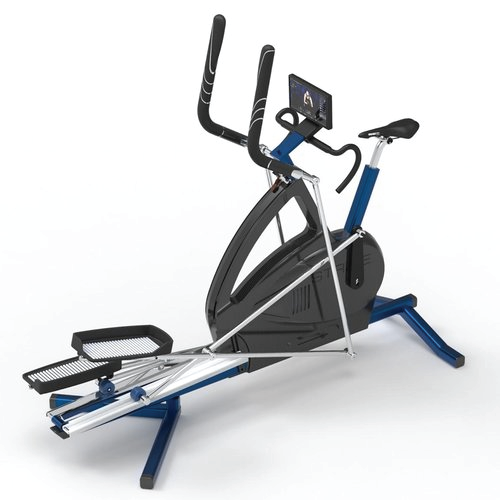
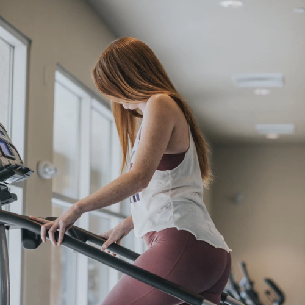

Role / UI Designer
Project Length / 5 Weeks
Tools / Sketch, Invision, Principle, Photoshop
-
-
-
-
-
-
The growing popularity of fast food and increased global health consciousness has lead to a boom in the fitness market. As baby boomers begin to retire, their desire to stay healthy/active is driving tremendous growth, and they’re often in need of an at-home solution.
Our client, Joseph Prosnitz created Stride 360 in an effort to train himself for triathlons. He suffers from juvenile arthritis, and he created a machine that switches between trainer and elliptical bike to make his workouts easier. As he spoke with users and trainers, he realized the machine alone wasn’t enough, and that he needed to address the behavioral aspects of fitness and routine-building.
Our challenge was to Create an engaging interface for the Stride 360 elliptical bike that offers user-generated content and motivates the user to adopt a sustainable fitness routine.
We started the process by completing domain research about the exercise bike market. Previous UX research showed that the ideal users for Joseph's app are older suburban moms, who would stand to benefit most from Joseph’s bike interface.
My team and I did a detailed competitive analysis of ten different competitors inside and outside the fitness space and identified commonalities and differences between their UIs. The three most important takeaways were:
Trend / We noticed that, particularly within mobile apps, visually stunning graphs, pie charts, and data displays were central to the aesthetic, and feel of the app.
Takeaway / Takeaway: Despite their beauty - given our user, we felt many of these visuals lacked sufficient labeling or context - leaving their users confused.
Trend / We noticed the most successful executions of workout controls, and metrics screens had large buttons that were easy to click or tap.
Takeaway / Given our users are older, and less tech-savvy we can differentiate Stride from the competition by using large easy to tap buttons.
With data visualization, we will show users what they’re doing now and doing next.
Keep users upbeat with vibrant colors, delightful illustrations, and micro-interactions.
Use large buttons and CTAs that make our intentions obvious, clear and digestible.
Interview synthesis from the UX team that began Joseph’s project revealed that the users for Stride 360 were limited in their tech-savviness and overwhelmed by technology. The overwhelming consensus from older users was their goals were to maintain a healthy weight and exercise regularly, a distinct difference from younger users who wanted to lose weight and train for marathons or triathlons.
- User on her workout habits
Based on our competitive analysis and design principles, our team came up with two high-level improvement areas as we looked through the wireframes provided to us.
We noticed that structurally elements of the interface were serving an aesthetic instead of functional purpose. We wanted to build on top of the charts and graphs to make them actionable instead of just interesting.
Keeping in mind that our users are largely not tech-savvy - the lack of clear exit navigation controls, cryptic buttons, and small text presented an opportunity to improve the usability.
Using these goals, opportunities, and research takeaways, I developed the following three design directions to reflect Sarah’s needs/frustrations.
Inspired by electricity, and the feeling of catharsis associated with music and dance - this direction uses warm and vibrant reds with dark grey accents to give Sarah a little extra energy for her morning workout.
I explored the user’s desire to maintain vitality and/or healthy habits with this direction, and the style exudes a sense of connectedness between the body and earth. Cool tones and natural, outdoor photography give this direction a softer, understated feel.
The third design direction I came up with focusses on Sarah’s desire to achieve goals over a longer timespan and reflects her long term aspirations. A wider color palette, with more contrast, represents her creativity, and asymmetrical jagged lines are used to mimic her nonlinear fitness journey.
I decided to move forward with The Journey map direction because I felt it aligned most closely with our user and married a desire to understand past accomplishments and set goals for the future.
In translating the journey map style tile into high fidelity screens I wanted to focus on two high-level areas: simplifying decision-making and contextualizing data.
The fitness content platforms currently available to Sarah left something to be desired in terms of scannability and relevance. Within the discover section - I made it easier to select new workouts by showing users only the info they need workout without overwhelming them.
Different workouts might appeal to Sarah at different stages of her journey. A clearly labeled system (as shown) will help her find the perfect workout for her needs and mood.
For newer users without a lot of experience taking fitness classes - popularity is a powerful persuasion tool that supplements system recommendations.
During usability testing, users said time was a top concern. My design isolates "time" in the bottom right-hand corner making it easy to see the commitment each workout requires.
For newer users without a lot of experience taking fitness classes - popularity is a powerful persuasion tool that supplements system recommendations.
Our competitive and wireframe analysis both showed that data lacked context and explanation in most visualizations. In my design, I wanted to make clear when Sarah sees a number; what it means. Each metric should provide a benchmark to compare it to.
The way my design contextualizes data is the key differentiator between Stride 360 and other fitness applications. We knew the key metrics users cared about: Calories, Weight, and Minute/Hour Goals from the UX wireframes we received. The next step in the design process was to contextualize those metrics every time the user sees one of those numbers:
This graphic gives Sarah a consistency benchmark against her target: 3 pieces of information are being conveyed: her achievement; her original target; and the total possible number of days she could have worked out. This allows her to easily place the number of days she worked out this week into a deeper context.
This line graph gives Sarah an extra piece or context and compares her weight loss to her target weight so she can visualize how close she is to her goal over time. This additional benchmark will help the user understand what their current weight means and keep him/her on track.
This line graph gives Sarah an extra piece or context and compares her weight loss to her target weight so she can visualize how close she is to her goal over time. This additional benchmark will help the user understand what their current weight means and keep him/her on track.


The Stride 360 project was a valuable design exercise because it forced me to make tough decisions about weighing client feedback against user preferences. My final design was a compromise between what the client envisioned and what user feedback/research revealed about the way suburban moms prefer to work out.
This project required me to study how best to visualize data in different scenarios, and challenge assumptions other apps and fitness tools made in their executions. I was able to synthesize user feedback and deliver a usable prototype because of a constant commitment to analysis and synthesis of the data. By honing in on usability, I was able to deliver a modern, appealing product working moms will love.
At the end of our 5-week project - the team delivered a list of recommendations to the client for future development based on usability testing feedback:
Onboarding processes and a fitness assessment will be helpful for all additional testing, and the eventual final app. Although these weren’t specked out in our team’s wireframes - prototypes with onboarding processes at the beginning tested better. These prototypes caused less confusion among users about how recommendations were formulated.
Keeping in mind that our users are largely not tech-savvy - the lack of clear exit navigation controls, cryptic buttons, and small text presented an opportunity to improve the usability.
To learn more about Stride 360's progress, visit their site. Still have lingering questions or curiosities? Let's talk in person!
Say Hello!